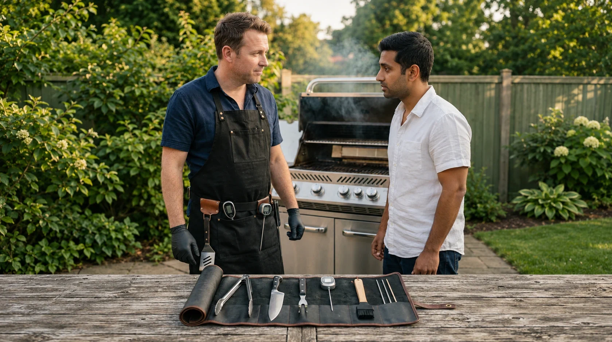
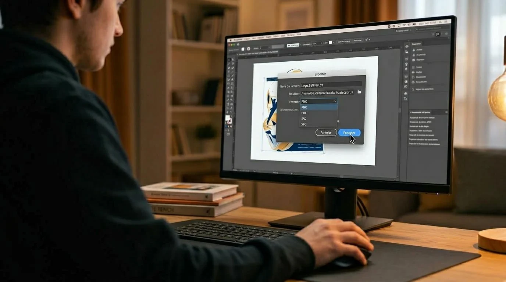
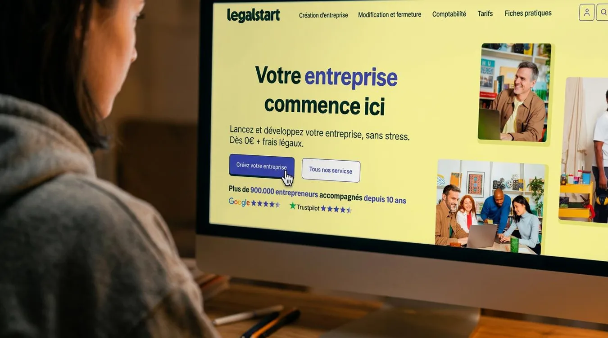
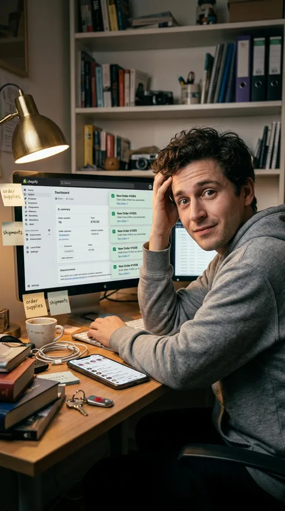
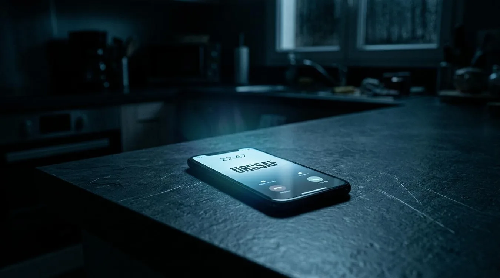

Studio Ludo.
Studio Ludo.Le Reconverti
Quitter un poste, engager son épargne, expliquer son choix à ses proches. Pour lui, le projet est déjà assez risqué. Il veut savoir à qui confier les décisions qu’il maîtrise moins bien que son métier.
Créer son entreprise commence souvent bien avant la première démarche. Comment faire de LegalStart la marque à laquelle on pense au moment de franchir le pas ?

Stratégie créative
Quitter un poste, engager son épargne, expliquer son choix à ses proches. Pour lui, le projet est déjà assez risqué. Il veut savoir à qui confier les décisions qu’il maîtrise moins bien que son métier.
Il a déjà livré une prestation, parfois même décroché la suivante. Son activité existe dans son quotidien. Le déclic consiste à lui donner une existence officielle, pendant qu’il a cet élan.
Big Idea
Le nom LegalStart porte les deux réponses. LEGAL donne confiance quand une décision semble risquée. START donne de l’élan quand l’envie est déjà là. Un même entrepreneur peut avoir besoin des deux au fil de son parcours.
Montrer une personne compétente dans son travail qui sait à quel moment passer la main. L’accompagnement devient un choix professionnel dont elle peut être fière.
Partir d’un geste qui fait déjà partie du métier. Une commande arrive, un fichier est livré. La création d’entreprise devient la suite logique de cette histoire.
Création · Paid Social
Chaque film s’ouvre sur un geste, un son ou une situation qui donne envie de voir la suite.

Comme un pro
Des gants noirs et des outils alignés laissent croire à une opération. Le plan large révèle un barbecue. Quand son ami lui demande comment créer sa boîte, le cuisinier a une réponse toute simple : pour les grillades, c’est lui le pro. Pour les démarches, il a choisi LegalStart.


Le Dé-Clic
Derrière un écran, un graphiste clique sur « Exporter ». À chaque clic, même bureau, autre métier. Le rythme s’emballe puis s’arrête sur le site de LegalStart. Cette fois, le bouton « Créer mon entreprise » donne un statut à l’activité qu’on vient de voir.

Victime de son succès
Face caméra, un indépendant confie que son activité marche presque trop bien. Les commandes arrivent, son premier client attend sa facture et sa structure reste à créer. Son témoignage s’achève sur la démarche qu’il aurait aimé engager plus tôt avec LegalStart.

URSSAF Horror
Un téléphone sonne dans la pénombre. « URSSAF » s’affiche à l’écran. Le son se déforme, la lumière bleuit, l’entrepreneure panique. Lorsqu’elle appelle LegalStart, une voix calme lui explique la démarche. La scène d’horreur redevient un coup de fil ordinaire.
Un-compétent
Une étagère tombe, la peinture éclabousse la pièce. Puis on retrouve les bricoleurs du dimanche au travail, parfaitement à l’aise dans leur métier. L’humour prépare la chute : eux aussi peuvent confier la création de leur boîte à quelqu’un dont c’est le métier.
Plan média prévisionnel
Le budget sert d’abord à découvrir quel couple accroche–public donne envie d’entamer une démarche, puis à diffuser les créations qui y parviennent.
Enveloppe annuelle proposée
365 000 €
Les quatre canaux de diffusion
Tester l’ouverture des films auprès des aspirants et repérer le moment où l’attention décroche.
Amplifier les créations retenues, puis recibler les personnes qui ont vu un film ou visité le site.
Présenter le territoire LEGAL aux salariés en transition avec un discours de pair à pair.
Répondre à une recherche de création d’entreprise quand la personne formule déjà son besoin.
Tourner plusieurs ouvertures et prévoir le cadrage de chaque plateforme.
Comparer les hooks à audience et à format comparables.
Modifier une variable par test, de l’ouverture à l’appel à l’action.
Renforcer les combinaisons validées et relancer les publics déjà exposés.
Si les premières secondes perdent le public, je retravaille le hook. Si la vidéo est vue mais peu cliquée, je teste la promesse ou le CTA. Si les clics arrivent sans demande qualifiée, j’examine la page d’arrivée avant d’augmenter la diffusion.
Le suivi rapproche la rétention en ouverture, le taux de clic et le coût par prospect. Ces indicateurs guideraient les décisions d’investissement de cette campagne conceptuelle.